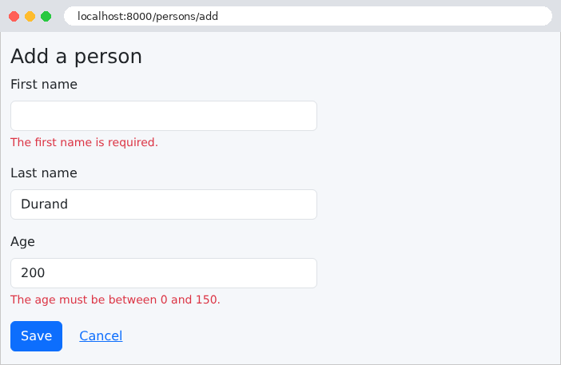
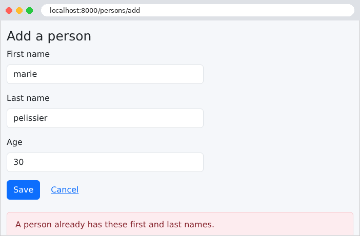
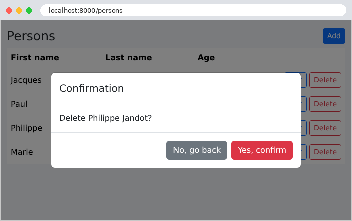

9. Arquitetura em camadas e acesso a dados
Os exemplos anteriores mantinham seus dados na memória. Uma aplicação real os guarda em um banco de dados e se organiza em camadas (veja o diagrama na introdução):
- a camada web (views, formulários, templates): lê a requisição, chama a camada de negócio, escolhe o template;
- a camada de negócio: as regras de negócio;
- a camada DAO (Data Access Object): as consultas ao banco de dados.
Cada camada conhece apenas a camada imediatamente abaixo e o mínimo possível de detalhes dela: a camada web desconhece as consultas, e a camada de negócio desconhece o HTML. Essa separação torna cada camada mais fácil de entender, testar e evoluir. O Exemplo 28 aplica isso ao gerenciamento de uma lista de pessoas: é, em menor escala, o gerenciamento de médicos e clientes do estudo de caso.
Em [Python], o acesso ao banco de dados se organiza em várias camadas:
- o padrão DB-API 2.0 (PEP 249) do [Python] define uma interface comum para todos os SGBDs: abrir uma conexão, obter um cursor, executar um comando SQL e ler as linhas. Cada SGBD tem seu próprio driver: para o [MySQL] (e o [MariaDB]), o [Django] recomenda o [mysqlclient], uma biblioteca escrita em C, instalada pelo arquivo de exemplo [requirements.txt] ;
- o ORM (Object-Relational Mapper) do [Django] mapeia classes (modelos) para tabelas do banco de dados e converte as linhas lidas em objetos. Ele gerencia conexões e transações, gera ele mesmo os comandos SQL — adaptados a cada SGBD — e traduz os erros de cada driver em exceções comuns (uma violação de restrição de unicidade se torna uma [IntegrityError], qualquer que seja o SGBD). Ele segue o padrão chamado Active Record: cada objeto sabe como se salvar ([person.save()]) e se excluir ([person.delete()]), e cada classe tem um manager ([Person.objects]) a partir do qual as consultas são feitas. Esse é o modelo do [Eloquent], o ORM do [Laravel]; o [Doctrine], o ORM derivado do [Symfony], por outro lado, seguiu o padrão Data Mapper, em que um objeto separado lê e salva as entidades.
O ORM, derivado do [Django], faz parte do [Django] e é um de seus componentes essenciais: a interface de administração, a aplicação de autenticação, as sessões em banco de dados e as views genéricas dependem dele. Ele é o equivalente do [JPA] e do [Hibernate] em [Java], do [Entity Framework Core] para [C#], ou do [SQLAlchemy] (usado com o [Flask]) para o [Python]. Observe uma consequência do funcionamento do [Django]: por padrão, cada requisição abre sua própria conexão com o banco de dados (na primeira requisição SQL) e a fecha ao terminar (no sinal [request_finished], exemplo 24). A configuração [CONN_MAX_AGE] permite que as conexões permaneçam abertas de uma requisição para outra (conexões persistentes), e o [Django] 5.1 acrescentou um verdadeiro pool de conexões para o [PostgreSQL]. Abrir uma conexão com o [MySQL] na mesma máquina leva apenas alguns milissegundos.
Este exemplo requer um servidor [MySQL] 8.4 ou posterior em execução (ou [MariaDB] 10.11 ou posterior; as versões mínimas são as do [Django] 6.1): o apêndice explica como instalar um usando o [Laragon].
9.1. Exemplo 28: um sistema de gerenciamento de pessoas em três camadas
9.1.1. O banco de dados
O banco de dados [dbpersons] é criado pelo script SQL. Usando o [Laragon], você pode executá-lo, por exemplo, na ferramenta [HeidiSQL] (menu Arquivo / Executar arquivo SQL), ou pela linha de comando, a partir da pasta do exemplo:
O arquivo [database/dbpersons.sql]:
- Linha 3: o script é escrito em [UTF-8]; isso é informado ao servidor para que os acentos dos dados ([Pélissier]) permaneçam intactos;
- linha 5: o conjunto de caracteres [utf8mb4] aceita todos os caracteres (acentos, emojis etc.). A collation [utf8mb4_unicode_ci] compara strings sem distinguir letras maiúsculas e minúsculas nem acentos: para o [MySQL], [pelissier] e [Pélissier] são iguais;
- linha 11: um número de versão, incrementado cada vez que a linha é modificada (veja “bloqueio otimista”, abaixo);
- linha 17: uma restrição de unicidade nomeada: o banco de dados não permite duas pessoas com o mesmo nome e sobrenome.
[Django] também pode criar as tabelas por conta própria, a partir dos schemas, por meio de migrações: arquivos [Python] que descrevem, passo a passo, a criação e as modificações de cada tabela. O comando [python manage.py makemigrations] escreve esses arquivos comparando os schemas com o estado descrito pelas migrações anteriores; [python manage.py migrate] as aplica ao banco de dados. Essa é a maneira padrão de trabalhar com o [Django]. Mantemos um script SQL, comum a todas as versões do estudo de caso, que mostra exatamente o que o banco de dados contém. Inversamente, o comando [python manage.py inspectdb] escreve os schemas de um banco de dados existente: um bom ponto de partida, que vale a pena revisar.
9.1.2. A configuração: config/settings.py
- linhas 21–26: os middlewares do Exemplo 21: a proteção anti-CSRF, as mensagens flash e a simulação dos métodos PUT e DELETE (o arquivo [config/middleware.py] é o do Exemplo 21);
- linhas 32–42: a configuração [DATABASES] descreve os bancos de dados da aplicação: neste caso, um só, o banco de dados [default]. [ENGINE] designa o engine do [Django] para o [MySQL] (que usa o driver [mysqlclient]); seguido do nome do banco de dados, do nome de usuário e da senha (deixada em branco com as configurações do [Laragon]: se o seu servidor tiver senha, informe-a aqui), do nome do host e da porta. [OPTIONS] passa ao driver o conjunto de caracteres da comunicação com o servidor — o conjunto de caracteres do banco de dados;
- linhas 44–55: os templates, com [APP_DIRS] para os templates de formulário (exemplo 18) e o context processor de mensagens (exemplo 20);
- linhas 67–74: a configuração [LOGGING] configura o log do [Python] (o módulo [logging]), que o [Django] usa para suas mensagens. Ela segue o formato do módulo [logging.config]: destinos ([handlers]: neste caso, o console, por meio de um [StreamHandler], que escreve na saída de erro) e logs ([loggers]), identificados por seus nomes. O log [django.db.backends] recebe, somente no modo de depuração, cada comando SQL enviado ao banco de dados, junto com sua duração: enviamos isso ao console no nível [DEBUG] (o mais detalhado). [disable_existing_loggers: False] preserva os logs que o [Django] configura por conta própria.
Não há mais nada a configurar: os módulos das três camadas se importam mutuamente (a camada web importa a camada de negócio, que importa a camada DAO), e a camada ORM estabelece ela mesma a conexão com o banco de dados quando precisa.
9.1.3. O modelo Person: persons/models.py
O arquivo se chama [models.py]: é onde o [Django] procura os modelos de uma aplicação declarada em [INSTALLED_APPS].
- Linha 8: um modelo é uma classe que herda de [models.Model];
- linha 10: a chave primária, gerada pelo banco de dados ([AutoField]: o [AUTO_INCREMENT] do [MySQL]). [Django] a acrescentaria automaticamente se ela não fosse declarada (um campo [id], do tipo escolhido pela configuração [DEFAULT_AUTO_FIELD]); nós a incluímos aqui para maior clareza. Ela é igual a [None] até que o objeto seja inserido;
- linha 12: a versão da linha. O ORM do [Django] não tem bloqueio otimista embutido: ele é escrito pela camada DAO (veja abaixo);
- linhas 14–16: as colunas. Cada atributo de classe que é um campo do modelo ([models.XxxField]) corresponde à coluna de mesmo nome; o tipo da coluna é inferido do tipo do campo ([CharField]: [VARCHAR], de tamanho [max_length]; [IntegerField]: [INT]). Como em um formulário (exemplo 08), os campos são declarados como atributos da classe, mas não são os mesmos campos: os de [django.db.models] descrevem colunas, enquanto os de [django.forms] descrevem campos de formulário;
- linhas 19–25: a classe interna [Meta] fornece informações sobre o próprio modelo. [db_table]: o nome da tabela (caso contrário, o [Django] usaria o nome da aplicação seguido do nome do modelo, [persons_person]). [managed = False]: a tabela já existe, e o [Django] não a gerencia: [makemigrations] não gerará nenhuma migração de criação ou modificação para ela. [ordering]: a ordem das linhas quando uma consulta não especifica nenhuma;
- linhas 28–29: o método [__str__] (Exemplo 12) retorna o texto que representa o objeto: [str(p)], ou [{p}] em uma f-string, retorna [Marie Pélissier].
Um modelo é uma classe comum à qual é possível acrescentar métodos e propriedades. O ORM, por sua vez, preenche os atributos com base nas linhas lidas e gera os comandos SQL a partir dos atributos.
9.1.4. A camada DAO: persons/dao.py
A camada DAO contém apenas consultas, sem regras de negócio. Cada função começa com [Person.objects], o manager do modelo, de onde partem todas as consultas.
- linhas 11–12: [all()] retorna um [QuerySet]: um objeto que descreve uma consulta sem executá-la. A consulta só é enviada ao banco de dados quando seus resultados são necessários (aqui, quando [list] os percorre): diz-se que um [QuerySet] é lazy (tardio). Ele pode, assim, ser refinado antes da execução ([filter], [exclude], [order_by]...), e cada método retorna um novo [QuerySet]. A ordem é a de [Meta.ordering];
- linhas 16–17: [filter(id=id)] acrescenta a condição [WHERE id = ...]; [first()] executa a consulta, limitada a uma linha ([LIMIT 1]), e retorna o primeiro objeto, ou [None]. ([Person.objects.get(id=id)] retornaria o objeto, mas lançaria a exceção [Person.DoesNotExist] se ele não existisse, e o atalho [get_object_or_404], exemplo 03, retornaria um erro 404);
- linhas 22–23: várias condições em [filter] são combinadas por [AND]; [exclude] acrescenta uma condição [NOT]. Os parâmetros nomeados se referem aos campos ([first_name=...]); sufixos especificam a comparação: [age__gte=18] ([>=]), [last_name__startswith="P"], [last_name__iexact=...] (sem diferenciar maiúsculas de minúsculas)... Os valores são transmitidos ao banco de dados separadamente e nunca são copiados para o texto do comando SQL, o que impossibilita a injeção de SQL;
- linhas 27–28: [create] constrói o objeto e o salva ([INSERT]); após a inserção, o ORM guarda no objeto o id gerado pelo banco de dados. Equivale a [p = Person(first_name=..., ...)] seguido de [p.save()];
- linhas 35–38: a atualização, com seu bloqueio otimista. [update] atualiza todas as linhas especificadas por [QuerySet] em uma única operação, com um único comando [UPDATE], e retorna o número de linhas atualizadas. O filtro tem duas condições: o id e a versão lida. Se outra requisição modificou a linha nesse meio-tempo — fazendo sua versão mudar —, [UPDATE] não modifica nenhuma linha, e a função retorna [False]. Esse é o princípio do bloqueio otimista: nada é bloqueado, mas as modificações concorrentes são detectadas. A expressão [F("version") + 1] se refere à própria coluna, no comando SQL ([version = version + 1]): o cálculo é feito pelo banco de dados, e não em [Python] com base em um valor lido anteriormente;
- linhas 42–43: a exclusão: [delete()] envia o [DELETE] da linha do objeto.
Ao contrário do [Doctrine], o ORM do [Django] não tem um manager que compare cada objeto lido com seu estado original para salvar apenas as colunas modificadas: [save()] reescreve todas as colunas do objeto (ou as de seu parâmetro [update_fields]). Isso é mais simples e previsível; [update] permite escrever exatamente o comando desejado.
9.1.5. A camada de negócio: persons/business.py
- linhas 12–14: as mensagens das regras de negócio;
- linhas 18–19: uma classe de exceção específica da camada de negócio: uma regra de negócio rejeita a operação, e a mensagem da exceção se destina ao usuário. Ela herda de [Exception] sem acrescentar nada; só o seu nome importa;
- linhas 23–27: os dados de uma pessoa, como transmitidos pela camada web à camada de negócio: um objeto simples, sem relação com o [Django];
- linhas 34–38: uma pessoa inexistente é um erro de negócio;
- linhas 44–52: regra nº 1: duas pessoas não podem ter o mesmo nome e sobrenome. A regra é verificada antes da gravação no banco de dados, e uma exceção [BusinessError] é lançada se ela não for respeitada. Mas essa verificação não é suficiente: duas requisições simultâneas poderiam verificar, ambas, que não há homônimo e depois inserir o registro. A restrição de unicidade do banco de dados rejeita então o segundo [INSERT], e o ORM lança uma [IntegrityError], que é transformada na mesma [BusinessError]. O banco de dados é a última linha de defesa. [raise ... from e] liga a exceção original à nova: o log mostrará as duas;
- linhas 55–70: regra nº 2: não modificar um registro que foi modificado nesse meio-tempo por outra pessoa. O formulário de atualização carrega a versão do registro que foi lida (em um campo oculto); se ela difere da versão atual, o registro mudou desde que foi exibido. Resta o caso em que a modificação concorrente ocorre entre a leitura da linha 58 e a gravação da linha 66: ela é detectada pelo bloqueio otimista da camada DAO. A função relê então o registro da pessoa para retornar a nova versão;
- linhas 73–77: a exclusão retorna a pessoa como “excluída”, para a mensagem de confirmação.
Toda operação que grava dados é executada dentro de uma transação: [transaction.atomic()], usado com [with] (um gerenciador de contexto, exemplo 20), abre uma transação ([BEGIN]) no início do bloco; se o bloco termina normalmente (mesmo com um [return]), a transação é confirmada ([COMMIT]); se uma exceção ocorre dentro do bloco, a transação é desfeita ([ROLLBACK]): nenhuma das alterações feitas no bloco é mantida, e a exceção segue seu caminho. [transaction.atomic] também pode ser usado como decorador de uma função inteira ([@transaction.atomic]). A camada de negócio determina, assim, o escopo das transações: uma operação de negócio equivale a uma transação. Fora de um bloco [atomic], o ORM opera em modo “autocommit”: cada comando SQL é confirmado imediatamente. Uma [IntegrityError] é interceptada fora do bloco [with]: dentro do bloco, a transação não seria mais utilizável após o erro. As demais exceções (como uma falha do banco de dados ou um erro de programação) não são erros de negócio: elas continuam seu processamento.
9.1.6. A camada web
A entrada de dados é descrita por um formulário (Exemplo 19):
- linhas 9–17: os campos e suas restrições, com mensagens em inglês;
- linhas 20–26: um parâmetro adicional do construtor, [edit], especificado por nome ([PersonForm(request.POST, edit=True)]): um parâmetro escrito depois de [*args] só pode ser passado por nome. O formulário de atualização recebe um campo adicional, “version”, em um campo oculto: [self.fields] é um dicionário ao qual é possível acrescentar um campo;
- linhas 30–32: os dados validados, no formato esperado pela camada de negócio.
O [Django] também pode gerar um formulário a partir de um modelo (a classe [forms.ModelForm]): seus campos e suas restrições são derivados das colunas, e seu método [save()] salva o objeto. Isso é muito comum. No entanto, o formulário modificaria então o modelo antes que a camada de negócio verificasse suas regras. Um formulário separado mantém as camadas distintas: a camada web transmite à camada de negócio apenas dados validados.
- linha 8: a camada de negócio, a única camada conhecida pela camada web;
- linhas 25–40: a adição, em três etapas: validação do formulário (erros de entrada, exemplo 19); a chamada à camada de negócio (regras de negócio); e depois o esquema PRG, com uma mensagem flash de sucesso (exemplo 20). Um [BusinessError] exibe o formulário novamente, junto com os dados digitados e a mensagem da exceção ([str(e)]), que o template exibirá no rodapé da página. Os erros de entrada e os erros de lógica de negócio são, assim, tratados da mesma forma;
- linhas 44–54: o formulário de edição, pré-preenchido com a pessoa recuperada (parâmetro [initial], exemplo 18). Se a pessoa não existe, a view redireciona para a lista com uma mensagem flash de erro ([messages.error]). O formulário é enviado com o método PUT (o campo oculto [_method], Exemplo 21), para a URL [/persons/<id>] ([reverse], com os parâmetros de rota em [args]);
- linhas 58–78: a view de [/persons/<id>], para os métodos PUT (atualização, seguindo o mesmo padrão da adição) e DELETE (exclusão, protegida pelo token anti-CSRF, Exemplo 21). Na exclusão, não há formulário para exibir novamente: qualquer erro também é transmitido em uma mensagem flash;
- linhas 83–86: a página do formulário. Um erro de negócio é retornado com o código 422, como para um formulário inválido.
A camada web não contém nem SQL nem qualquer regra de negócio: ela traduz a requisição em uma chamada à camada de negócio e o resultado em uma página. As rotas ([persons/urls.py]): [/persons] (a lista), [/persons/add], [/persons/<id>/edit] e [/persons/<id>] (PUT e DELETE).
Os templates:
- linhas 14–16: as mensagens flash no topo da página (exemplo 20). Seu rótulo ([message.tags]: [success], [error]) determina sua cor;
- linha 20: o bloco de rodapé, onde as páginas exibem seus erros (exemplo 19);
- linhas 22–23: a janela de confirmação e seu script (exemplo 21).
A lista inclui os links e botões do Exemplo 21, junto com sua janela de confirmação (os arquivos [fragments/confirmation.html] e [static/js/app.js] são os do Exemplo 21). Os atributos [p.first_name], [p.last_name]... são os dos [Person] objects lidos pelo ORM. O bloco [{% empty %}] (Exemplo 14) trata a lista vazia.
Um template comum à adição e à modificação:
- linha 8: o campo oculto [_method], somente para a modificação;
- linha 13: o campo oculto de versão, se ele existe no formulário;
- linhas 21–25: o erro de negócio, no rodapé da página.
9.1.7. Execução
A lista de pessoas:

Um formulário de adição preenchido incorretamente: os erros de entrada são detectados pela camada web.

Um homônimo: a entrada está correta, mas a camada de negócio rejeita a adição. Como a comparação é feita pelo banco de dados, ela ignora tanto as letras maiúsculas quanto os acentos: [marie pelissier] é homônimo de [Marie Pélissier].

Uma adição bem-sucedida:

Para testar a regra nº 2, vamos abrir o mesmo registro em duas abas. Na primeira aba, vamos alterar a idade e salvar. Na segunda aba, que ainda exibe a versão antiga, vamos também modificar o registro:

A exclusão, com sua confirmação:


9.1.8. Os comandos SQL
Vamos acompanhar no console os comandos SQL de uma modificação (o servidor foi reiniciado e o banco de dados foi recriado). A exibição do formulário de modificação da pessoa nº 1:
Cada linha mostra a duração do comando (em segundos), o comando SQL, seus parâmetros ([args]) e o nome do banco de dados ([alias]). Os dois primeiros comandos servem para estabelecer a conexão: o [Django] consulta o servidor (sua versão, suas configurações) e depois define o nível de isolamento das transações ([READ COMMITTED]: uma transação vê as alterações confirmadas pelas outras). Em seguida vem a leitura por chave primária, com seu [ORDER BY] (correspondente a [Meta.ordering]) e seu [LIMIT 1] (correspondente a [first()]). No log, os parâmetros são copiados na ordem para que possam ser lidos; originalmente, são enviados separadamente ([args]). Não há transação: uma leitura isolada não precisa de uma. O registro principal é salvo com uma nova idade:
(a conexão foi aberta, como na requisição anterior). Dentro de uma única transação ([BEGIN] ... [COMMIT]), vemos: a leitura do registro, a busca de um homônimo, o [UPDATE] e depois a releitura do registro. O [UPDATE] incrementa a versão ([version + 1]) e define a condição do bloqueio otimista ([AND version = 0]). O servidor de desenvolvimento registra a requisição como POST: foi assim que ela chegou, antes de o middleware convertê-la em PUT. Vamos agora enviar o mesmo formulário uma segunda vez, ainda com a versão antiga:
A versão lida não é a do formulário: a camada de negócio lançou uma [BusinessError], que desfez a transação ([ROLLBACK]), e a página exibe “This record has been modified meanwhile: reload it.” Da mesma forma, a adição de um homônimo para após a busca do homônimo, sem um [INSERT].